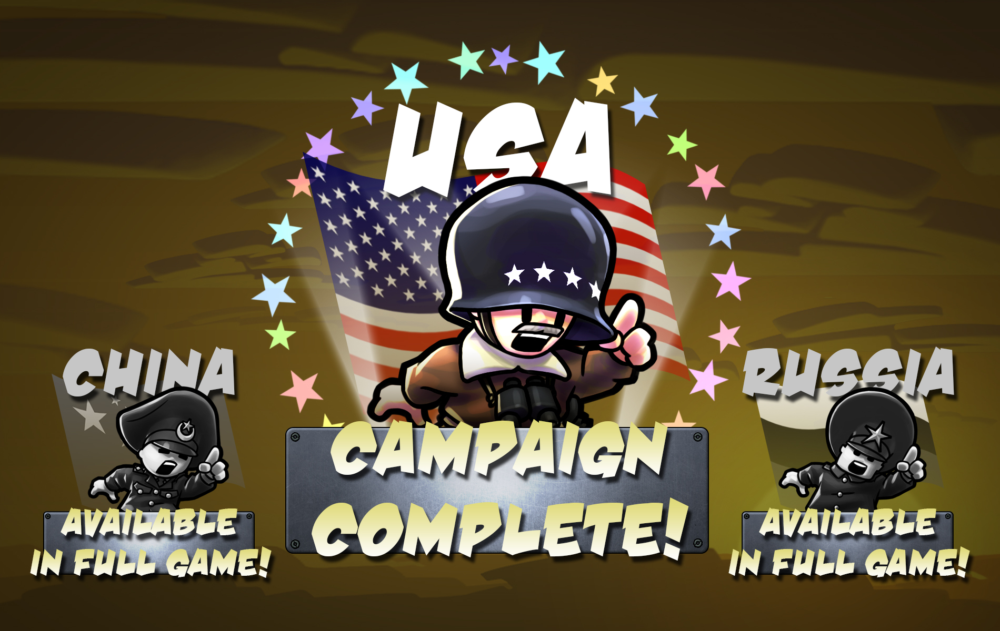

Внимание! Теории приведённые ниже, всего лишь теории автора, автор не состоит в ErathWork Games, поэтому не надо считать эти теории каноном.
По скриншоту ниже можно понять, что Империя орла - США, Армия Дракона - Китай, а Альянс Стального Медведя - Россия и это подтверждает не только расположение на карте, костюмы персонажей и их имена, но и фото из папки игры (название фото - "CampaignComplete-USA.jpg")
Можно предположить, что разработчики хотели сделать озвучку на разных языках, ведь катсцены из игры лежат в папке с именем USA.